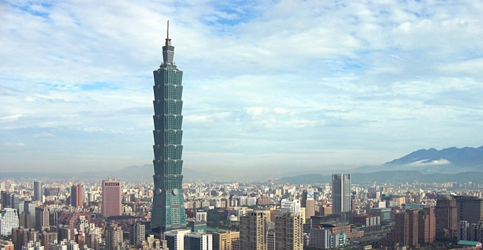

셋째날 일정
- (09:00) 솽리엔시장에서 아침식사
- 위치 : Shuanglian Market, No. 198, Minsheng West Road, Datong District, Taipei City, Taiwan 103
길찾기
- (10:00) 중화민국 총통부 (Presidential Office Building)
- 우리나라의 청와대와 같은곳.
- 일본 점령 당시 총독의 거주지여서 하늘에서 보면 건물이 日 자로 생겼다고 한다.
- 무장한 군인들이 지키고 있으며 사진촬영을 제지함. 크게 볼건 없고 일본점령 이라는 역사적 배경을 생각하고 보면 느끼는바가 많다고 함. 우리나라와 인식이 많이 다르다.
- 위치 : Presidential Office Building, No. 122號, Section 1, Chongqing South Road, Zhongzheng District, Taipei City, Taiwan 100
길찾기
- (10:30) 중정기념당 (National Chiang Kai-shek Memorial Hall)
- 타이완 초대 총통이자 타이완 역사적에 가장 중요한 인물로 추앙받는 장제스를 기리는 기념당
- 기념당 입장까지 89개의 계단이 있는데 이것은 장제스가 서거한 나이라고 한다.
- 정각마다 근위병 교대식. 그래서 시간을 맞추기 위해 중정기념당과 총통부 순서를 바꿔야 할수도 있는것 염두.
- 연중무휴, 09:00~17:00
- 위치 : No. 21號, Zhongshan South Road, Zhongzheng District, Taipei City, Taiwan 100
길찾기
- (11:30) 키키레스토랑에서 점심식사
- 중샤오푸싱점
- 10분이상 늦으면 예약이 취소되어서 선결제 하지않음. 늦으면 웨이팅할것 염두
- 할인세트(계란두부튀김 + 부추꽃볶음 + 건고추와 닭고기 볶음 + 파인애플 마요네즈 새우 + 맥주or음료 2잔) NT$1350 (약 54000원)
- 위치 : KiKi Restaurant Fuxing, No. 28號, Section 1, Fuxing South Road, Zhongshan District, Taipei City, Taiwan 104
길찾기
- (14:00) 노지카페
- 요괴빙수 2개에 NT$400 (약 16000원) 정도
- 위치 : 106, Taiwan, Taipei City, Da’an District, Section 4, Civic Blvd, 10號路地 手作り氷菓子 (市民大道店)
길찾기
- (16:00) 쓰쓰난춘

- 70여년전 중국에서 이주한 군인과 그 가족들이 살던곳. 현재는 플리마켓이 열리고 공원같은 곳이 되었다.
- 위치 : Four Four South Village Simple Market, No. 50號, Songqin Street, Xinyi District, Taipei City, Taiwan 110
- 타이베이101과 걸어서 4분거리
길찾기
- (18:00) 타이베이101전망대

- 예약 30분이내 입장해야함
- 위치 : Taipei 101 Observatory, No. 7號, Section 5, Xinyi Road, Xinyi District, Taipei City, Taiwan 110
No. 182, Gui Sui Street, Datong District , 타이베이, 103, Taiwan - 歸綏街182號, 大同區, (台北, 103)
- 딘타이펑과 붙어있음
길찾기
- (19:00) 딘타이펑에서 저녁식사
- A세트로 2개 예약했는데, 하나를 B세트로 바꿀수 있는지 물어봐야함
- 위치 : Din Tai Fung Chinese Taipei 101 Restaurant, 台北101購物中心No. 45, City Hall Rd, Xinyi District, Taipei City, Taiwan 110
길찾기
- (~) 스린야시장

- 타이베이 시내에서 가장 규모가 큰 야시장이다. 1909년에 시작되어 100년이 넘는 역사를 자랑하는 유서 깊은 시장이다.
- 큐브스테이크, 치즈감자, 망고젤리가 대표적인 음식
- 위치 : Shilin Night Market, No. 101號, Jihe Road, Shilin District, Taipei City, Taiwan 111
길찾기